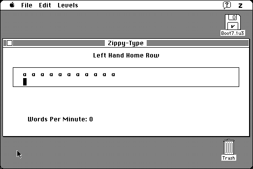

Download
zippy-type.zip (45K) Zippy-Type 1.1 repackaged into a zipped hfs disk image and checksum file. The disk image can be mounted with Mini vMac.
zippy-type.sea.hqx (86K) Zippy-Type 1.1 in the original format.
copyright: Joseph J. Strout
mod date: Mar 6, 1997
license: free for non-commercial use
official url :
Zippy-Type
“A simple typing tutor, especially suited for teaching the Dvorak layout.” Requires System 7.1 or later.

If you find these downloads useful, please consider helping the Gryphel Project, which hosts them.
Here are the md5 checksums for the downloads, signed with Gryphel Key 5:
--------- GRY SIGNED TEXT --------- 24b3bb8cbb7ab9ccba60396d2c0de8ac zippy-type.zip fe4de169ef10436b442b66a4c4de3827 zippy-type.sea.hqx ------- BEGIN GRY SIGNATURE ------- Gry/4Xa8CFcUzxdN/I0HP0rPLzOtWaMex2+jbeJLx8lAhZxL8I4modNtRulJ5/5y Hw5MHYi4+kqHTIbfAA+RJPlu6x7E3c1tJsnxa9jeWfPqEHYkMhXkKKykzlPRVLaD wb54zOfSyDKLycWaxHX83XwiYbrO8pY/7d+n1jy1/jtVgDAxXVx9RmzSuV4ttrrf -------- END GRY SIGNATURE --------